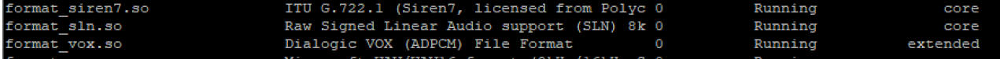
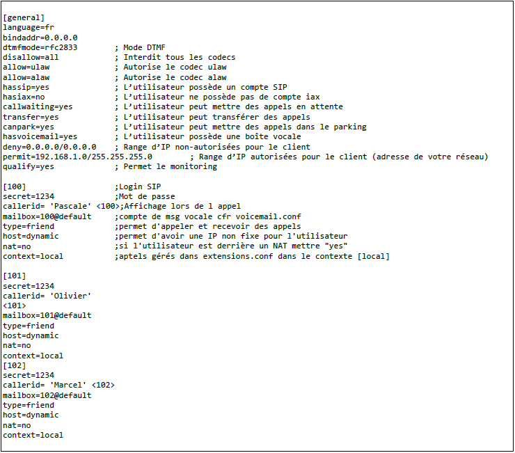
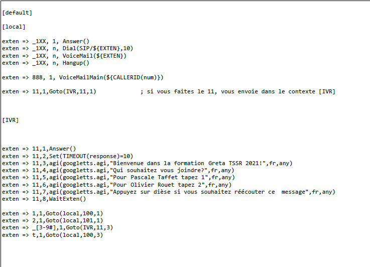
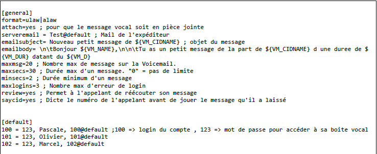

IVR
ASTERISK Mise en place d’un IVR
- Installation des pré requis
apt install perl
apt install libwww-perl
apt install sox
apt install mpg123
apt install flac
- On télécharge google.agi
cd /var/lib/asterisk/agi-bin
wget https://raw.github.com/zaf/asterisk-googletts/master/googletts.agi
chmod +x googletts.agi
- On vérifie que le module est bien installé
asterisk -rvv
module show

- On modifie le fichier SIP
nano /etc/asterisk/sip.conf

- On modifie le fichier extensions

exten =>11,1,Answer()
exten =>11,2,Set(TIMEOUT(response)=10)
exten =>11,3,agi(googletts.agi,"Bienvenue dans la session distanciel
du jour",fr,any)
exten =>11,4,agi(googletts.agi,"Qui souhaitez vous joindre?",fr,any)
exten =>11,5,agi(googletts.agi,"Pour joindre Olivier, tapez 1",fr,any)
exten =>11,6,agi(googletts.agi,"Pour joindre Pascale, tapez 2",fr,any)
exten =>11,7,agi(googletts.agi,"Pour joindre Thomas, tapez 3",fr,any)
exten =>11,8,agi(googletts.agi,"Pour joindre Vincent, tapez 4",fr,any)
exten =>11,9,agi(googletts.agi,"Pour joindre Gabriel, tapez 5",fr,any)
exten =>11,10,agi(googletts.agi"Pour joindre Adrien, tapez 6",fr,any)
exten =>11,11,agi(googletts.agi"Pour joindre Quentin, tapez 7",fr,any)
exten =>11,12,agi(googletts.agi"Pour joindre Come, tapez 8",fr,any)
exten =>1,1,Goto(IT,100,1)
exten =>2,1,Goto(IT,101,1)
exten =>3,1,Goto(DEV,200,1)
exten =>4,1,Goto(DEV,201,1)
exten =>5,1,Goto(COMPTA,300,1)
exten =>6,1,Goto(COMPTA,301,1)
exten =>7,1,Goto(SECRETARIAT,400,1)
exten =>8,1,Goto(SECRETARIAT,401,1)
exten =>_9#,1,Goto(IVR,11,3)
exten =>t,1,Goto(SECRETARIAT,400,3)
ici les GOTO des 4 dernières lignes renvoie vers les numéros taper sur l'IVR, dans sip.conf, le 100 serait donc attribué à Pascale Taffet et le 101 serait attribué à Olivier Rouet, la ligne 3 renvoie au début du message IVR si le numéro choisis n'est pas le bon
et la ligne 4 renvoie à la ligne 3 de la configuration de l'user 100 (ici probablement sa messagerie vocale)
- On copie le fichier VoiceMail
cp /etc/asterisk/voicemail.conf /etc/asterisk/voicemail.conf.original
- On vide le fichier VoiceMail
> /etc/asterisk/voicemail.conf
- On modifie le fichier voicemail.conf
nano /etc/asterisk/voicemail.conf

- On ouvre la console Asterisk et on reload les paramètres